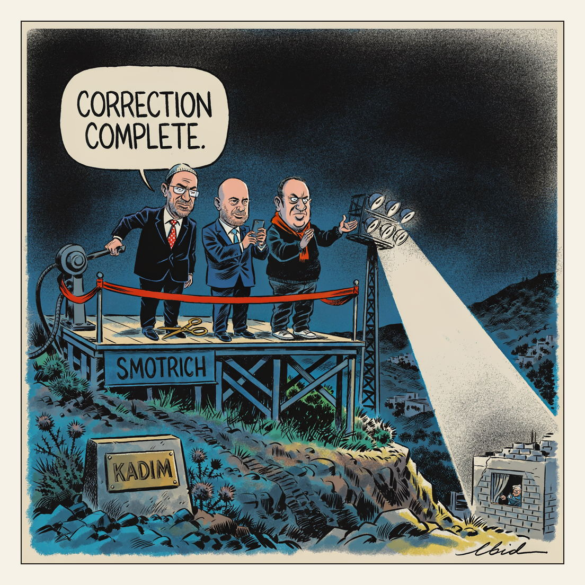

0300 hours. Press not admitted.
Opening Hours

Israeli settlers have re-established Kadim, a West Bank settlement near Jenin dismantled in the 2005 Disengagement, with 30 families moving in, some under military escort. Finance Minister Bezalel Smotrich, Knesset Speaker Amir Ohana and settler council head Yossi Dagan attended the state opening ceremony, from which media were barred; the government has approved more than 100 new settlements since late 2022. All settlements in the occupied West Bank are illegal under international law, and a Palestinian teacher living beside the nearby Emek Dotan settlement says groups shine powerful floodlights through his windows at two or three in the morning.